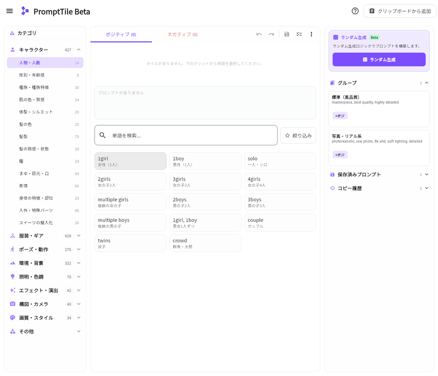

PromptTile は、日本語で意味を確認しながら、画像生成AIに渡す英語プロンプトをタイル形式で組み立てるWebアプリです。
このガイドでは、最初の1本を作る手順だけでなく、重み・トッピング・特殊構文、既存プロンプトの取り込み、保存済みプロンプトとグループの再利用、辞書編集とバックアップまでを、現行画面の操作名に合わせて説明します。

… メニュー、右側のライブラリ、検索・お気に入り絞り込みを確認できます。1. PromptTileとは？
PromptTileでは、1girl、cinematic lighting、masterpiece のような英語タグを、日本語ラベル・カテゴリ・検索を手掛かりに選びます。選んだ項目は構築エリアに並び、順序に従って画像生成AIへ貼り付けやすいプロンプト文字列になります。
| できること | 概要 |
|---|---|
| 日本語ベースの単語選択 | カテゴリ・日本語ラベル・検索から英語プロンプトを追加します。 |
| ポジティブ／ネガティブの分離 | 描きたい要素と避けたい要素を別々に構築・コピーします。 |
| タイル調整 | 重み、トッピング、同カテゴリの単語への差し替え、削除を後から行えます。 |
| 再利用 | グループ、保存済みプロンプト、コピー履歴、ランダム生成を使い分けられます。 |
| 辞書管理 | 標準辞書／ユーザー辞書の切り替え、単語編集、JSONバックアップ・復元に対応します。 |
2. 最初の3ステップ
- ポジティブを選び、左のカテゴリまたは検索欄から、描きたい人物・服装・背景・雰囲気の単語を探します。
- 単語カードを選ぶと、中央上部の構築エリアへタイルとして追加されます。必要に応じて複数の単語を追加します。
- 構築エリア下のプロンプト表示を確認し、コピー操作で画像生成AIのポジティブ欄へ貼り付けます。ネガティブも同じ手順で別に作成・コピーします。
3. 基本操作ガイド
3.1 画面の見方
PC幅の画面は、主に左・中央・右の3エリアで構成されます。スマートフォンやタブレットでは、同じ機能が縦方向やシート形式に再配置されます。
| エリア | 主な役割 | まず使う操作 |
|---|---|---|
| 左：カテゴリ | 大分類・子カテゴリ、通常表示／成人向け表示を切り替えます。 | 作りたい要素のジャンルを選びます。 |
| 中央：構築エリア | 選択済みタイル、完成プロンプト、検索、単語一覧を扱います。 | タイルの追加、調整、並び替え、コピーを行います。 |
| 右：ライブラリ | ランダム生成、グループ、保存済みプロンプト、コピー履歴を再利用します。 | 過去の内容を追加・復元します。 |
3.2 ポジティブとネガティブを切り替える
構築エリア上部のポジティブとネガティブを切り替えて編集します。ポジティブには描きたいものを、ネガティブには避けたい特徴を入れます。2つの内容は別々に保持されるため、タブを切り替えても編集内容は残ります。
| 入力欄 | 目的 | 例 |
|---|---|---|
| ポジティブ | 人物・服装・背景・画風・光などを指定します。 | 1girl, cinematic lighting, masterpiece |
| ネガティブ | 生成結果から避けたい特徴を指定します。 | lowres, blurry, text |
3.3 カテゴリから単語を選ぶ
左側で大分類を選び、必要に応じて子カテゴリを選びます。中央下部の単語グリッドには、選択中のカテゴリの単語が英語タグと日本語ラベルで表示されます。単語カードの本文を選ぶと、構築エリアへ追加されます。
- ポジティブまたはネガティブを選びます。
- 左側で大分類、続いて子カテゴリを選びます。
- 単語グリッドから追加したいカードを選びます。
- タイルが構築エリアに追加され、完成プロンプトへ反映されます。
- 同じ単語をもう一度選ぶと、そのタイルは選択解除されます。すでに同じ英語タグがある場合は、重複追加を防ぎます。
3.4 日本語・英語で単語を検索する
中央の検索欄「単語を検索…」に、日本語または英語を入力します。検索は英語タグと日本語ラベルの両方を対象にするため、「映画」「光」「青」「笑顔」のような日本語から候補を探せます。よく使う単語は、単語カードを長押ししてお気に入りにできます。検索欄の横にある絞り込みからお気に入りだけを表示すると、候補を素早く絞れます。
3.5 タイルを並び替える・削除する
構築エリアに入れたタイルは、タイル全体を長押ししてドラッグすることで順番を変更できます。ドラッグ中はタイルに「移動中」と表示されます。最終プロンプトは構築エリアの順序で出力されるため、関連する要素をまとめたいときに便利です。
複数のタイルを削除したい場合は、構築エリア上部の…メニューから削除モードを選び、各タイルに表示される×を押します。削除モード中は「タイルの×を押すと削除します」という案内が表示されます。単一タイルは、タイルを開いた調整画面の削除からも削除できます。PCでは通常タイルを右クリックして削除することも可能です。
3.6 複数選択とモード表示
操作列の複数選択を押すと、タイルをまとめて選べます。選択中は構築エリア上部に状態バナーが出て、選択件数、グループ化、選択を終了が表示されます。削除モードやグループへ追加中も同じ位置に案内が出るため、次のタップで何が起きるかを確認できます。
3.7 プロンプトを確認してコピーする
構築エリア内には、完成した英語プロンプトが表示されます。通常のタイルはカンマと半角スペースでつながれます。コピー操作を使うと、現在表示中のポジティブまたはネガティブの文字列をクリップボードへコピーできます。コピーした内容はコピー履歴にも保存されます。
4. タイル調整と特殊構文
4.1 重み調整：特定の単語を強める・弱める
構築エリア上の通常タイルを選ぶと、タイルの調整画面が開きます。強調度（Weight）では、よく使う0.8、1.0、1.1、1.2をワンタップで選べます。さらに細かく調整したいときは、スライダーまたは増減ボタンで0.50〜1.50の範囲を0.05刻みで変更します。
| 重み | 目的 | 出力例 |
|---|---|---|
1.0 | 通常の強さです。重み記法は付きません。 | masterpiece |
1.1〜1.2 | 重要な要素を少し強めたいときに使います。 | (masterpiece:1.2) |
1.3以上 | かなり強く指定したいときに使います。 | (cinematic lighting:1.3) |
0.8 | 出現の強さを弱めたいときに使います。 | (smile:0.8) |
数値を1.0に戻すと、括弧と数値は自動的に外れます。最初から多くの要素を強くしすぎず、重要な1〜2個を1.1〜1.2にして生成結果を比較する方法がおすすめです。
4.2 トッピング：色・品質・スタイルなどを加える
トッピングは、対象の単語に紐づいた色・品質・スタイルなどの修飾候補を、日本語で選んで追加する機能です。対応する単語では、単語一覧の設定アイコンからトッピング付きで追加できます。
追加後に変更する場合は、構築エリアのタイルを開き、調整画面のトッピングを選んで展開します。トッピングは初期状態では折りたたまれているため、重みだけを素早く変えたい場合にも画面が複雑になりません。各グループでなしを選ぶと、その修飾を解除できます。
4.3 単語を差し替える
通常タイルを開くと、同じカテゴリに候補がある場合は差し替えボタンが表示されます。選ぶと同カテゴリの英語タグと日本語ラベルの一覧が開くため、近い別の単語へ置き換えられます。
4.4 ターゲット画像生成AIと特殊構文
設定のワークスペースにあるターゲット画像生成AIで使用環境を選ぶと、特殊構文の利用可否が切り替わります。特殊構文の追加は、構築エリア上部の…メニューから行います。
| ターゲット画像生成AI | 利用できる特殊構文 | メニューでの操作 |
|---|---|---|
| 標準（特殊構文なし） | なし | 特殊構文の項目は表示されません。 |
| PixAI（BREAK対応） | BREAK | BREAKを追加を選びます。 |
| SD WebUI（A1111） | BREAK、AND、ステップ切り替え、交互構文 | BREAKを追加、ANDを追加、構文結合を選びます。 |
4.5 BREAK、AND、構文結合を使う
BREAKはプロンプトの途中に区切りを置く構文です。PixAIまたはA1111を選んだ状態で…メニューのBREAKを追加を選ぶと、通常タイルと同じように並び替えられるBREAKタイルが入ります。
1girl, cyberpunk city, cinematic lighting BREAK (masterpiece:1.2)AND、ステップ切り替え、交互構文はA1111向けです。ANDはANDを追加から入れます。ステップ切り替えと交互構文は、通常タイルが2つ以上あるときに構文結合を選び、対象となる2つの単語と結合タイプを指定します。
[day:night:0.5]
[red dress|blue dress]5. 取り込み・保存・再利用
5.1 クリップボードから既存プロンプトを取り込む
すでに持っている英語プロンプトを使う場合は、構築画面右上のクリップボードから追加を選びます。カンマ区切りのタグが解析され、取り込み前に検出された単語がチップとして一覧表示されます。
- 画像生成AIなどから、取り込みたい英語プロンプトをコピーします。
- PromptTileでクリップボードから追加を選びます。
- 検出された単語を確認します。不要なチップは選んで取り込み対象から外せます。
- ○件の単語を追加を選ぶと、現在のポジティブまたはネガティブへ追加されます。
BREAKとANDは単独の構文として認識されます。既存のPromptTile辞書にある単語はその日本語名を優先し、未登録の英語タグは補助翻訳辞書から日本語が表示される場合があります。翻訳が見つからないタグも、英語のまま取り込めます。
5.2 保存済みプロンプトを再利用する
構築エリア上部の保存ボタンから、現在のポジティブ・ネガティブを名前付きで保存できます。保存した内容は、メニューの保存済み・グループ画面で管理します。この画面にはグループと保存済みのタブがあります。
| ボタン | 動作 |
|---|---|
| 構築に読込 | 保存済みのポジティブ部分を現在のポジティブへ追加します。重複する英語タグは追加されません。 |
| Negに読込 | 保存済みのネガティブ部分を現在のネガティブへ追加します。重複する英語タグは追加されません。 |
| フルセット反映 | 保存済みのポジティブ・ネガティブの両方を、現在の構築内容と置き換えます。 |
| コピー | 保存済みのポジティブまたはネガティブを直接コピーします。 |
5.3 グループでパーツをまとめる
人物の基本セット、夜景背景セット、品質セットのように、複数タイルを一緒に使いたい場合はグループ化します。新しい空のグループは…メニューの新規グループから作成できます。
既存タイルをまとめる場合は、操作列の複数選択を押し、対象タイルを選びます。上部の状態バナーに表示されるグループ化を選ぶと、選択したタイルをグループにできます。グループを選ぶと追加先として有効になり、単語を選ぶだけでグループへ追加できます。追加を終えるときはバナーの追加を終了を押します。
5.4 コピー履歴から復元する
プロンプトをコピーすると、ポジティブ・ネガティブの内容がコピー履歴に保存されます。PCでは右ライブラリ、モバイルではライブラリシートからコピー履歴を開きます。履歴を選んで内容を確認した後、現在に追加または置き換えるを選びます。
| 操作 | 内容 |
|---|---|
| 現在に追加 | 今のワークスペースを残し、履歴の単語を追加します。重複した英語タグは追加されません。 |
| 置き換える | 現在のポジティブ・ネガティブを、履歴の内容で置き換えます。 |
5.5 ランダム生成（Beta）
右ライブラリのランダム生成は、テーマや選択条件に基づいてプロンプトを構築するBeta機能です。選択候補やロジックは調整される場合があるため、生成後は構築エリアで単語・順序・重みを確認し、必要な箇所を調整してからコピーしてください。
6. 単語・辞書・設定を管理する
6.1 標準辞書とユーザー辞書を切り替える
設定のワークスペースにある使用する辞書の切り替えで、標準辞書とユーザー辞書を選べます。選択した辞書は、構築画面と単語編集画面の表示・検索に使用されます。用途ごとに自分専用の単語セットを使いたい場合は、ユーザー辞書を選んでください。
6.2 単語・カテゴリを編集する
メニューの単語編集から、カテゴリと単語を追加・編集・非表示にできます。単語の追加・編集ダイアログでは、日本語から英語タグの候補を探す補助検索も利用できます。候補は補助情報であるため、確定前に英語タグ・日本語名・追加先カテゴリを確認してください。
6.3 辞書データをバックアップ・復元する
PC版では、設定のデータ同期から辞書データをJSON形式で書き出し・読み込みできます。書き出し時には対象の標準辞書／ユーザー辞書を選び、全データを書き出すまたは追加分のみ書き出すを選択します。読み込み時も、復元先の辞書を選びます。
モバイル・タブレットでは、JSONファイルを選ぶ操作は使えない場合があります。その場合はJSON文字列を直接貼り付けてください。
6.4 設定でできること
| 設定項目 | 主な用途 |
|---|---|
| 外観 | システム設定・ライト・ダークの表示テーマを選びます。 |
| ワークスペース | ターゲット画像生成AI、起動時の構築内容の復元／クリア、使用する辞書を設定します。 |
| 履歴管理 | コピー履歴の最大保存件数を設定し、不要な履歴を削除します。 |
| データ同期 | 辞書データをJSONでバックアップ・復元します。 |
| データ管理と制限 | 辞書・保存済みプロンプトの初期化、成人向け（NSFW）表示の有効化を行います。 |
| アプリ情報 | アプリ情報と、外部翻訳辞書を含む第三者ライセンスを確認します。 |
7. 実践例：夜のサイバーパンク都市
ここでは、映画のワンシーンのような、夜のサイバーパンク都市を背景にした人物イラストを作る例を示します。実際に表示される単語や日本語ラベルは、選択中の辞書によって異なるため、近い意味のタイルを選んでください。
7.1 ポジティブを組み立てる
- ポジティブタブで、人物カテゴリから
1girlのような主役タイルを選びます。 - 背景・雰囲気のカテゴリまたは検索から、都市・夜・サイバーパンクに近いタイルを追加します。
- 検索欄に「映画」または「光」と入力し、
cinematic lightingに近い照明タイルを追加します。 - 品質に関する
masterpieceを追加し、タイルを開いて重みプリセットの1.2を選びます。 - ターゲット画像生成AIがPixAIまたはA1111なら、
…メニューからBREAKを追加し、品質指定を後ろへまとめます。
1girl, cyberpunk city, cinematic lighting BREAK (masterpiece:1.2)7.2 ネガティブを組み立てる
ネガティブタブへ切り替え、「低解像度」「ぼやけ」「文字」など、避けたい要素を日本語検索で探して追加します。
lowres, blurry, text7.3 生成結果を見ながら調整する
ポジティブ・ネガティブをそれぞれコピーして画像生成AIへ貼り付けます。生成後は、一度に多くの要素を変えず、たとえば重みだけを1.2から1.1に変える、照明タイルを差し替える、不要なタグを削除するといったように、1回に1〜2点ずつ試すと結果の違いを把握しやすくなります。
8. 困ったとき
| 状況 | 確認すること |
|---|---|
| 日本語で検索しても見つからない | 短い言葉にして再検索してください。設定で、標準辞書とユーザー辞書のどちらを使用しているかも確認します。 |
| 単語を追加したのに見当たらない | ポジティブ／ネガティブのどちらを編集中か、検索・お気に入り絞り込みが有効になっていないかを確認してください。同じ英語タグは重複追加されません。 |
| 削除・BREAK・AND・構文結合が見つからない | 構築エリア上部の…メニューを開いてください。ANDと構文結合は設定でSD WebUI（A1111）を選んだときだけ表示されます。 |
| トッピングの設定が見当たらない | タイルを開き、調整画面のトッピングを選んで展開してください。対象単語にトッピンググループがない場合は表示されません。 |
| クリップボードから追加できない | ブラウザのクリップボード権限、コピー元の文字列、取り込みシートで有効になっているチップを確認してください。 |
| コピーできない | ワークスペースに少なくとも1つ単語を追加してからコピーしてください。ブラウザのクリップボード権限も確認します。 |
| 成人向けの候補が表示されない | 設定の「データ管理と制限」でNSFW表示を有効化し、確認画面を完了してください。その後、構築画面で成人向け表示へ切り替えます。 |
| どこから操作すればよいか分からない | 構築画面右上のヘルプアイコンから操作ガイドを再表示し、このページの「最初の3ステップ」へ戻ってください。 |
8.1 成人向け（NSFW）コンテンツについて
成人向けカテゴリ・単語は初期状態では表示されません。利用する場合は、設定のデータ管理と制限にある成人向け（NSFW）コンテンツをオンにし、確認画面で有効化します。有効化後は、構築画面で通常表示と成人向け表示を切り替えられます。通常用データと成人向けデータは混在しない設計です。
8.2 外部翻訳辞書と第三者ライセンス
未登録タグの日本語表示に使う外部翻訳辞書は、読み取り専用の補助辞書です。PromptTileの標準辞書・ユーザー辞書には統合されません。派生元データとMIT Licenseは、設定のアプリ情報にある外部翻訳辞書の第三者ライセンスで確認できます。
関連する公開データ：boorutan/booru-japanese-tag、DominikDoom/a1111-sd-webui-tagcomplete。